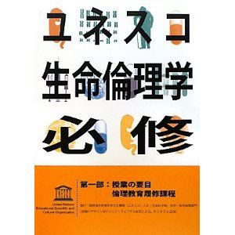

書評コーナー
季刊誌41号より
ユネスコ生命倫理学必修〈第1部〉授業の要目、倫理教育履修課程
■国際連合教育科学文化機関(ユネスコ)人文社会科学局 (著), 科学技術倫理部門 (著),
浅井 篤 (翻訳), 高橋 隆雄 (翻訳), 谷田 憲俊 (翻訳), 「ユネスコ生命倫理学必修」発行委員会 (翻訳)
■出版社: 医薬ビジランスセンター (2010/12)
■ISBN-10: 490140251X
■ISBN-13: 978-4901402514
■B5版 120ページ
■価格1400円（税別）
生命倫理の対象は“いのち”に関わる全てであり、地球共同体という枠組みで考えられる。 今、命の扱いをはじめ様々な分野で生命倫理が問われている。したがって、生命倫理教育は愁眉のことであり、 とりわけ生命倫理に理解には幅広い裾野からの積み上げが大切である。生命倫理教育用には専門書・教科書が多いが、 一般教養向けにはないのが実情である。
本書はユネスコが採択した「生命倫理と人権に関する世界宣言」に基づく。したがって、内容は 種々の文化的、歴史的、宗教的背景を持つ様々な国に共有され、全世界の生命倫理教育に議論の余地のない 必修課程として確立している。
本書は授業の要目と履修課程を教師に示したものである。しかし、教育の核心・要点が 示されているので、学生用教科書にも適する内容になっている。 各単元を見れば日常的な場面に生命倫理的課題が横たわっているとわかるので、関連事例の提示などで 学生がみずから討論に参加できるようになる。本書によって生命倫理への理解が基本から応用まで 深まると期待される。（た）